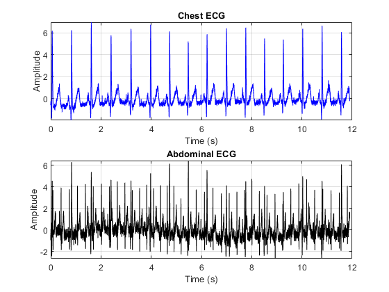
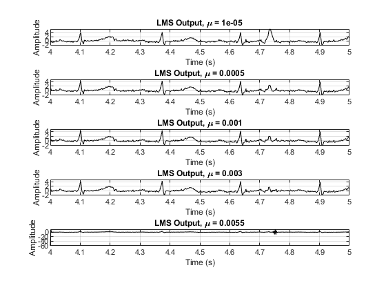
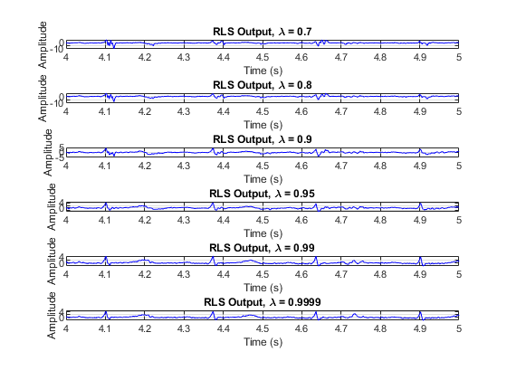
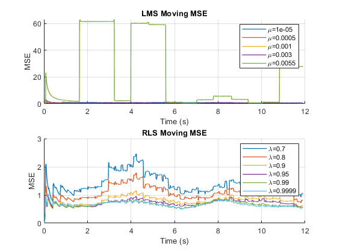
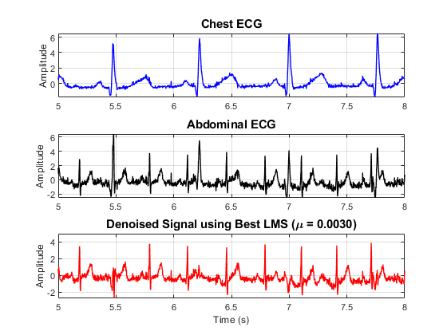
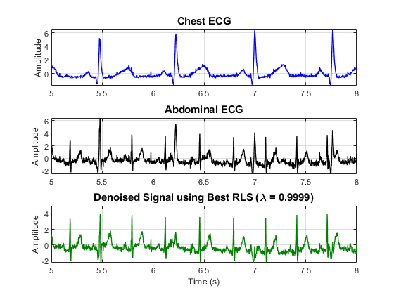

Contents
- Load data
- Raw signal baseline removal (remove signal mean)
- Optional standardization for adaptive filtering stability
- Time domain Visualization
- LMS adaptive filtering
- RLS adaptive filtering
- LMS outputs
- RLS outputs
- Convergence curves
- Choose best LMS and best RLS automatically
- Figure 1: Chest + Abdominal + Best LMS output
- Figure 2: Chest + Abdominal + Best RLS output
clc; clear; close all;
Load data
load('M_F_ECG.mat'); % must contain S_chest and S_abdominal S_chest = S_chest(:); S_abdominal = S_abdomen(:); N = length(S_chest); Fs = 500; t = (0:N-1)/Fs;
Raw signal baseline removal (remove signal mean)
x_raw = S_chest - mean(S_chest); d_raw = S_abdominal - mean(S_abdominal);
Optional standardization for adaptive filtering stability
x = x_raw / std(x_raw); d = d_raw / std(d_raw);
Time domain Visualization
figure('Color','w','Name','Chest vs abdominal ECG'); subplot(2,1,1); plot(t, x, 'b'); grid on; title('Chest ECG'); xlabel('Time (s)'); ylabel('Amplitude'); subplot(2,1,2); plot(t ,d, 'k'); grid on; title('Abdominal ECG'); xlabel('Time (s)'); ylabel('Amplitude');

LMS adaptive filtering
M = 10; mu_vals = [0.00001 0.0005 0.001 0.003 0.0055]; errWinSize =800; lms_outputs = cell(length(mu_vals),1); lms_mse = cell(length(mu_vals),1); for k = 1:length(mu_vals) mu = mu_vals(k); w = zeros(M,1); y = zeros(N,1); e = zeros(N,1); mse = zeros(N,1); for n = M:N u = x(n:-1:n-M+1); y(n) = w' * u; e(n) = d(n) - y(n); w = w + 2*mu*e(n)*u; mse(n) = mean(e(max(1,n-errWinSize):n).^2); end lms_outputs{k} = e; lms_mse{k} = mse; end
RLS adaptive filtering
M_rls = 10; lambda_vals = [0.7 0.8 0.9 0.95 0.99 0.9999]; delta = 1; rls_outputs = cell(length(lambda_vals),1); rls_mse = cell(length(lambda_vals),1); for k = 1:length(lambda_vals) lambda = lambda_vals(k); w = zeros(M_rls,1); P = (1/delta) * eye(M_rls); y = zeros(N,1); e = zeros(N,1); mse = zeros(N,1); for n = M_rls:N u = x(n:-1:n-M_rls+1); y(n) = w' * u; e(n) = d(n) - y(n); gain = (P*u) / (lambda + u'*P*u); w = w + gain * e(n); P = (P - gain*u'*P) / lambda; mse(n) = mean(e(max(1,n-errWinSize):n).^2); end rls_outputs{k} = e; rls_mse{k} = mse; end
LMS outputs
Lshow = N; figure('Color','w','Name','LMS Estimated Fetal ECG'); for k = 1:length(mu_vals) subplot(length(mu_vals),1,k); plot(t(1:Lshow), lms_outputs{k}(1:Lshow), 'k'); grid on; title(['LMS Output, \mu = ' num2str(mu_vals(k))]); xlabel('Time (s)'); ylabel('Amplitude'); xlim([4 5]) end

RLS outputs
figure('Color','w','Name','RLS Estimated Fetal ECG'); for k = 1:length(lambda_vals) subplot(length(lambda_vals),1,k); plot(t(1:Lshow), rls_outputs{k}(1:Lshow), 'Color', [0 0 1]); grid on; title(['RLS Output, \lambda = ' num2str(lambda_vals(k))]); xlabel('Time (s)'); ylabel('Amplitude'); xlim([4 5]) end

Convergence curves
figure('Color','w','Name','Convergence Curves'); subplot(2,1,1); hold on; for k = 1:length(mu_vals) plot(t, lms_mse{k}, 'LineWidth', 1); end grid on; title('LMS Moving MSE'); xlabel('Time (s)'); ylabel('MSE'); legend(arrayfun(@(v) ['\mu=' num2str(v)], mu_vals, 'UniformOutput', false)); subplot(2,1,2); hold on; for k = 1:length(lambda_vals) plot(t, rls_mse{k}, 'LineWidth', 1); end grid on; title('RLS Moving MSE'); xlabel('Time (s)'); ylabel('MSE'); legend(arrayfun(@(v) ['\lambda=' num2str(v)], lambda_vals, 'UniformOutput', false));

Choose best LMS and best RLS automatically
final_lms_mse = zeros(length(mu_vals),1); for k = 1:length(mu_vals) final_lms_mse(k) = mean(lms_outputs{k}.^2); end [~, best_lms_idx] = min(final_lms_mse); final_rls_mse = zeros(length(lambda_vals),1); for k = 1:length(lambda_vals) final_rls_mse(k) = mean(rls_outputs{k}.^2); end [~, best_rls_idx] = min(final_rls_mse); best_lms_signal = lms_outputs{best_lms_idx}; best_rls_signal = rls_outputs{best_rls_idx};
Figure 1: Chest + Abdominal + Best LMS output
figure('Color','w','Name','Best LMS Result'); subplot(3,1,1); plot(t, x, 'b', 'LineWidth', 1); grid on; title('Chest ECG', 'FontSize', 11, 'FontWeight', 'bold'); ylabel('Amplitude'); xlim([5 8]) subplot(3,1,2); plot(t, d, 'k', 'LineWidth', 1); grid on; title('Abdominal ECG', 'FontSize', 11, 'FontWeight', 'bold'); ylabel('Amplitude'); xlim([5 8]) subplot(3,1,3); plot(t, best_lms_signal, 'r', 'LineWidth', 1); grid on; title(sprintf('Denoised Signal using Best LMS (\\mu = %.4f)', mu_vals(best_lms_idx)), ... 'FontSize', 11, 'FontWeight', 'bold'); xlabel('Time (s)'); ylabel('Amplitude'); xlim([5 8])

Figure 2: Chest + Abdominal + Best RLS output
figure('Color','w','Name','Best RLS Result'); subplot(3,1,1); plot(t, x, 'b', 'LineWidth', 1); grid on; title('Chest ECG', 'FontSize', 11, 'FontWeight', 'bold'); ylabel('Amplitude'); xlim([5 8]) subplot(3,1,2); plot(t, d, 'k', 'LineWidth', 1); grid on; title('Abdominal ECG', 'FontSize', 11, 'FontWeight', 'bold'); ylabel('Amplitude'); xlim([5 8]) subplot(3,1,3); plot(t, best_rls_signal, 'Color', [0 0.5 0], 'LineWidth', 1); grid on; title(sprintf('Denoised Signal using Best RLS (\\lambda = %.4f)', lambda_vals(best_rls_idx)), ... 'FontSize', 11, 'FontWeight', 'bold'); xlabel('Time (s)'); ylabel('Amplitude'); xlim([5 8])
